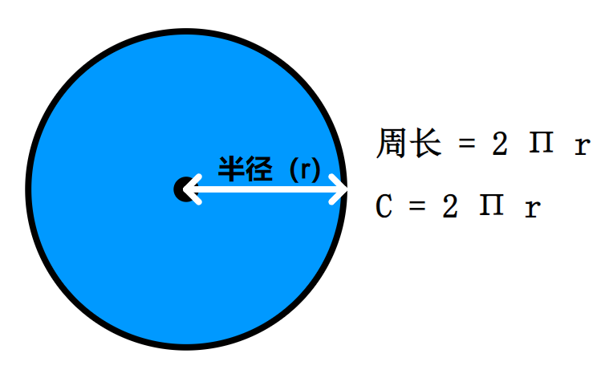

<!DOCTYPE lake>
<h1 data-lake-id="YdPEd" id="YdPEd"><span data-lake-id="u486e215a" id="u486e215a">0&gt; 功能需求</span></h1><p data-lake-id="ucc346c8b" id="ucc346c8b"><span data-lake-id="ud8269aea" id="ud8269aea">输入圆的半径，求圆的周长</span></p><p data-lake-id="u13ef1243" id="u13ef1243"></p><hr/><h1 data-lake-id="iDfld" id="iDfld"><span data-lake-id="u62b19dc5" id="u62b19dc5" style="color: #000000">1&gt; 程序设计</span></h1><span class="yuque-card-unsupported">[codeblock]</span><p data-lake-id="u8740a7be" id="u8740a7be"><span data-lake-id="u1c98e1cd" id="u1c98e1cd">😯</span><span data-lake-id="uae5f5f0b" id="uae5f5f0b">计算结果有误！！！</span></p><p data-lake-id="ud671b925" id="ud671b925"><br/></p><span class="yuque-card-unsupported">[codeblock]</span><hr/><h1 data-lake-id="OJ2fm" id="OJ2fm"><span data-lake-id="u259ce054" id="u259ce054">🐻</span><span data-lake-id="u4a0ea1dd" id="u4a0ea1dd">实践练习：</span></h1><p data-lake-id="ua570426b" id="ua570426b"><span data-lake-id="u6831cad5" id="u6831cad5">1&gt; 输入圆的半径，求圆的面积;</span></p><p data-lake-id="uc6dd6d76" id="uc6dd6d76"><span data-lake-id="u565b926b" id="u565b926b">2&gt;</span></p><p data-lake-id="ua25b4318" id="ua25b4318"><br/></p>